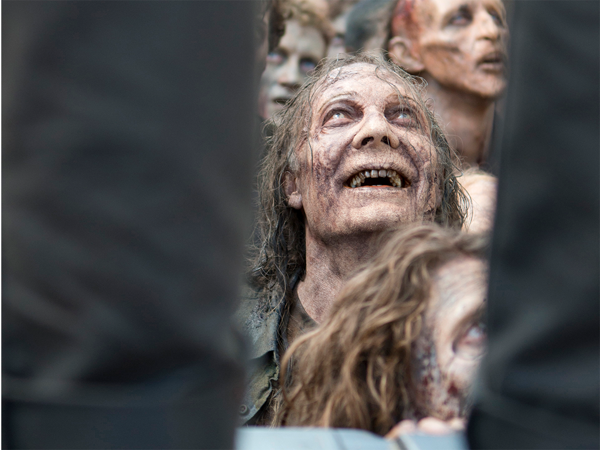

Eventos principales y convencionales
San Diego Comic-Con (SDCC)
Desde sus primeras temporadas, The Walking Dead ha sido protagonista en SDCC. Ya en 2010 presentaron avances anticipados de la serie en ese evento.
A lo largo de los años, numerosos paneles contaron con actores y creativos del show, como Norman Reedus, Andrew Lincoln, Melissa McBride, Lauren Cohan, Jeffrey Dean Morgan, Gale Anne Hurd, Greg Nicotero, Robert Kirkman, entre otros.
Comic-Con Málaga 2025
En agosto de 2025 se confirmó un panel exclusivo de The Walking Dead: Daryl Dixon, con la presencia de Norman Reedus, Melissa McBride, y otros miembros del elenco y equipo creativo, siendo una de las actividades estrella del evento.
Walker Stalker Con
Convención dedicada al universo zombie y a The Walking Dead en particular. Según fans en Reddit, era una cita recurrente pre-pandemia:
> “Walker Stalker is devoted mostly to zombie stuff, rather than The Walking Dead, but it’s still more The Walking Dead than anything else.” Aunque ha enfrentado controversias, muchos fans la recuerdan como el principal encuentro oficial de la franquicia.
Comic-Con Argentina (Buenos Aires, 2019)
En la edición de 2019, en el Centro Costa Salguero, estuvo presente Chandler Riggs (Carl Grimes) para charlas con fans en el escenario principal.
Comic-Con Ecuador (2019)
El actor Michael Rooker (Merle Dixon) participó en una conferencia y sesión de fotos en Comic-Con Ecuador, generando interacción directa con los fans locales.
Exhibiciones, atracciones y experiencias
The Walking Dead Experience – Madrid (2014)
En el Parque de Atracciones de Madrid, se instaló una experiencia temática permanente que recreaba escenas de la serie, con maquillajes, escenografía y efectos especiales. Fue la única atracción fija en Europa basada en la franquicia.
Atracción en Universal Studios Hollywood (2016)
Se inauguró una atracción inmersiva en los Estudios Universal de Hollywood, donde los visitantes vivían una “versión casi en vivo de la serie” con zombies, laberintos y decorados reales de la producción.
The Walking Dead: The Ride – Thorpe Park (2018)
En el Reino Unido, Thorpe Park abrió en marzo de 2018 una montaña rusa cubierta basada en la serie, parte de la celebración del “Año de The Walking Dead”.
Campañas Especiales y Marketing
Invasiones zombie globales (2010)
Para el estreno de la serie, AMC y Fox organizaron una invasión zombie simultánea en 26 ciudades del mundo, incluyendo lugares emblemáticos como el Puente de Brooklyn (Nueva York), el Memorial Lincoln (Washington D.C.), el Palacio de Westminster (Londres), la Acrópolis (Atenas) y el Museo del Prado (Madrid).
The Walking Dead Escape
Experiencia tipo escape room zombie organizada durante el New York Comic Con en 2013 y años posteriores, incluso en SDCC (San Diego) en 2015. Permitía a los participantes recorrer escenarios apocalípticos como “Survivors” o “Walkers” en situaciones inmersivas.
Marketing urbano e interactivo
Varias acciones creativas promocionaron nuevas temporadas o lanzamientos:
Pop-up book pop-up en 2015.
Realidad aumentada en paradas de bus en Viena.
Carteles “tear-off” en Oslo.
Camión con zombies en SDCC 2011.
Posters cinéticos en el metro de Alemania.
Acciones de guerrilla con zombies en cines de Sudáfrica.
Carrito de hamburguesas temático en Londres.
Datos curiosos
Demasiado violenta para la HBO
Antes de que empezara a emitirse en la AMC, 'The Walking Dead' fue ofrecida a la HBO, pero la cadena rechazó el proyecto porque lo consideraba "demasiado violento" para sus subscriptores.
Y después estrenó 'Juego de Tronos'...
Los zombies van a la escuela

Los actores que interpretan a los caminantes en 'The Walking Dead' deben asistir a una especie de "academia zombi" en la que les enseñan a caminar y moverse como un no-muerto. La premisa básica que les dan es que deben actuar como si acabasen de salir de un bar de copas a las 4 de la mañana. Y otra curiosidad: mientras que los actores que hacen de zombis comen y cenan juntos durante el rodaje, los que encarnan a los supervivientes lo hacen separados del resto.
¡Qué difícil es ser un zombi!
Durante el rodaje, los actores que hacen de caminantes no pueden decir ni mú. El peculiar sonido que emiten los zombis en la serie se añade posteriormente en la sala de edición. Además, los caminantes no parpadean, por lo que si algún actor cierra los ojos en uno de los planos en los que aparece, debe corregirse en postproducción. Más complejo fue el trabajo de edición del episodio 13 de la segunda temporada, que se rodó en una noche realmente fría, lo que provocaba que los intérpretes zombi desprendieran vapor de su boca. Como los muertos no tienen aliento, se tuvo que borrar digitalmente.
¿Qué comen los caminantes?

Aunque pueda parecer que hacer de zombi en 'The Walking Dead' es una ardua tarea, especialmente dura por tener que meterse cosas asquerosas en la boca, en realidad la carne que ingieren los caminantes es de cerdo. No sabemos, por eso, si hay vísceras halal para figurantes musulmanes. Además, los responsables de efectos especiales probaron con bañar la carne de salsa barbacoa para que esta fuese más sabrosa para los zombies, pero finalmente la sustituyeron por vinagre, porque la salsa corría el maquillaje de los actores.
La palabra tabú
Es curioso que en 'The Walking Dead', conocida popularmente por tus padres como "esa serie de zombis", ningún personaje haya pronunciado jamás esa palabra. Para referirse a ellos se han usado numerosos vocablos: "caminantes", "no muertos"... pero jamás "zombie". "Uno de los hechos que define este universo es que los personajes no están familiarizados con los zombies. En su mundo no existen las películas de Romero y no queríamos que se utilizara la palabra zombi porque nos llevaría de cabeza a toda esa cultura que conocemos. Así que dándoles un nombre diferente estamos dando a entender que esta situación es completamente nueva para ellos", explica el creador de la serie, Robert Kirkman.
Rick, el manco
En los cómics originales, el personaje de Rick Grimes pierde la mano derecha muy al comienzo de la historia. Es algo que Robert Kirkman decidió cambiar en la serie, pues borrarle la mano a Andrew Lincoln hubiese supuesto un trabajo de postproducción muy costoso.
Homenajes a 'Breaking Bad'

A lo largo de sus cinco temporadas, 'The Walking Dead' no ha dudado en guiñarle el ojo a la otra serie insignia de la AMC en los últimos años: 'Breaking Bad'. Hasta tres citas más o menos directas se han detectado en la serie, aunque la más indiscutible es la irrupción de la meta azul de Walter White en uno de los primeros episodios, cuando Daryl saca uno bolsa de "medicamentos con receta" entre los que no hay duda de que se incluye un poco de cristal del Sr. Heisenberg.
Carl es una nenaza
Eso es algo que muchos opinan sobre Carl Grimes, el personaje interpretado por Chandler Riggs que, por algún extraño motivo, es uno de los más odiados por los fans. El caso es que hay algo cierto en esa afirmación, pues dos chicas han sido sus dobles de acción a lo largo de la serie: Savana Jade Wehunt (hasta la temporada 4) y Emily Brobst (a partir de entonces).
Proporción desproporcionada
Según las cuentas de la web TVDuck.com, en el universo de 'The Walking Dead' hay 5.000 caminantes por cada ser humano superviviente. ¡Así cualquiera, abusones!
El hombre es un zombi para el hombre
¿Quienes representan la verdadera amenaza para la humanidad en 'The Walking Dead'? Obviamente, los caminantes no se andan con chiquitas cuando tienen hambre, pero hay un dato escalofriante que hace replantearse las cosas: De los 17 humanos que murieron en la tercera temporada, 14 fueron asesinados por otros supervivientes, mientras que sólo 3 lo hicieron bajo las muelas de los zombis.
No podía escapar de su personaje... ni de la policía

Las jornadas de rodaje de 'The Walking Dead' deben ser intensas, porque la actriz Lauren Cohan (Maggie) un día salió del set tan cansada y con tanta prisa que ni se molestó en cambiarse o limpiar la sangre falsa de su cuerpo. Un policía detuvo su coche y no la reconoció, pero tampoco hizo muchas preguntas. De hecho, según Cohan, el oficial estaba más interesado en conseguir una cita que en que pareciera que acabara de terminar una matanza. La que es guapa, es guapa.
Mordido por... un fan
Quién le iba a decir a Daryl Dixon que, después de aguantar tanto tiempo a los caminantes, no sería uno de ellos sino uno de sus fans quien lo mordería en una convención de la serie. Afortunadamente, el fan no estaba contagiado del virus zombie.
Glenn, el superviviente cantante
Además de resucitar de entre los muertos, Steven Yeun (Glenn) toca la guitarra y canta, y además lo hace bastante bien.
Dale salvó a Hershel
Dale tuvo durante las dos primeras temporadas de 'The Walking Dead' una gran relevancia como autoridad moral entre los supervivientes y el plan era mantenerlo en la historia más tiempo. No obstante, cuando Frank Darabont "abandonó" la serie, su colega Jeffrey DeMunn (Dale) abandonó la serie con él. Por esta razón, el nuevo showrunner, Glen Mazzara, se dio cuenta de que no podrían cumplir el plan de acabar con el personaje de Hershel esa misma temporada porque no estaría bien visto matar a dos ancianos (y autoridades morales) en la misma entrega. Así, Mazzara mantuvo a Hershel y le dio alguna de las tramas de Dale.
La resistencia de Shane

¿Sabías que el personaje de Shane en principio solo iba a durar una temporada? Así estaba establecido en el plan original de Frank Darabont, y se ajustaba más a la realidad del cómic. No obstante, Shane y su actor, Jon Bernthal, completaron la segunda entrega de 'The Walking Dead'. Quién sabe si hubiéramos aguantado aquella granja sin su presencia y su constante mala leche...
Extras de lujo

No todos los caminantes que vemos en 'The Walking Dead' son extras corrientes, sino que hay alguna que otra cara conocida. Quizás no por todos, eso sí. Hemos visto a Hives Ward, antiguo jugador de los Pittsburgh Steelers; al guitarrista de Anthrax, Scott Ian; e incluso un guiño a Johnny Depp, ya que su rostro fue replicado para escenificar la cabeza decapitada de un caminante.
La mayor amenaza de 'The Walking Dead'
En recientes temporadas, 'The Walking Dead' se ha adentrado aún más en los bosques de Georgia, lo que nos ha dado escenas de acción increíbles. No obstante, estas escenas son todo un suplicio para los actores de la serie, ya que estos bosques están plagados de garrapatas que no paran de causarles molestias a todos.
Merle casi fue arrestado
Michael Booker se tomó su papel de Merle Dixon tan en serio que posiblemente haya sido uno de los actores de 'The Walking Dead' que más hemos disfrutado viendo en pantalla. No disfrutaron tanto algunos vecinos de Atlanta, que llamaron a la policía al escuchar unos disparos en el set. Nada más y nada menos que un equipo de SWAT hizo acto de presencia, solo para encontrarse a Booker disparando balas de fogueo mientras rodaban el segundo episodio de la primera temporada. Normal que, causando tanta impresión, regresara el personaje temporadas después.
Carl, fan de Robert Kirkman
En las primeras temporadas de 'The Walking Dead', Carl solía llevar la camiseta con una particular huella de un perro, un guiño a otra de las obras gráficas del autor de 'The Walking Dead', Robert Kirkman, titulada 'Science Dog'.
El mismo escenario
Los protagonistas de 'The Walking Dead' se han movido por los dominios del estado americano de Georgia en la ficción, pero en la realidad la mayor parte de los escenarios se graban en un set de la ciudad de Sequoia. De hecho, el escenario de Woodbury y de Alexandria es el mismo, y la granja de Hershel solo está a un par de kilómetros de distancia.
¿Cómo es vivir en Sequoia?
Que una serie famosa se grabe en tu ciudad es todo un honor, pero también puede llegar a ser una molestia. Por eso, los residentes afectados por el rodaje de la serie reciben una compensación de 400 dólares mensuales. El ruido, el movimiento de la producción o las limitaciones para circular libremente por las calles son el precio que pagan los habitantes de la ciudad.
Greg Nicotero, el zombie
Nicotero, además de productor ejecutivo de 'The Walking Dead', supervisor de maquillaje protésico y director de la friolera de 14 episodios de la serie, también ha servido como extra. Y es que, ¿qué hay mejor que crear zombies? ¡Ser uno tú mismo!